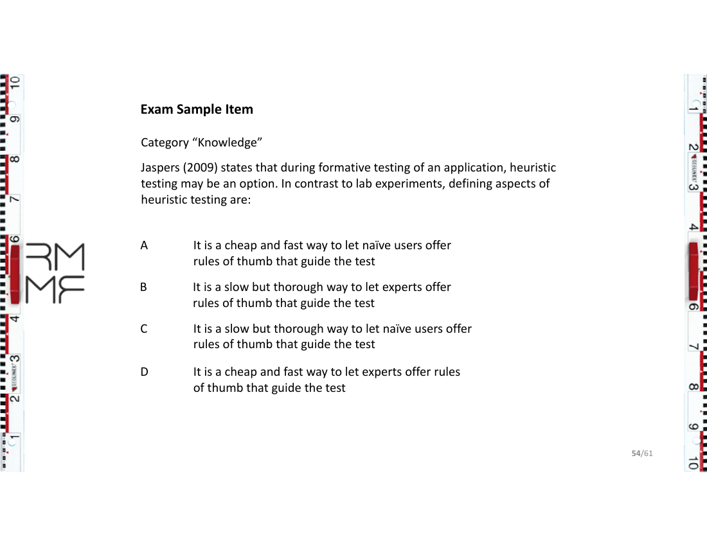
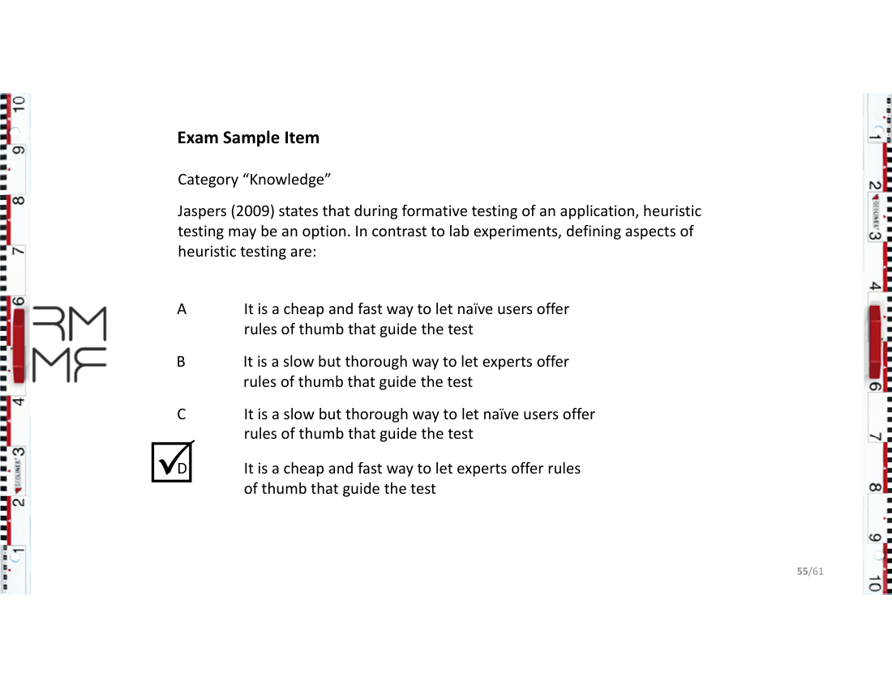

EXAM / L03
L03 · 逐题复习（2 组）
解析默认收起，可先选答案再展开核对，作答与错题自动保存。
启发式测试：谁来做，成本如何？

03 Σ SD5979 Qualitative methods 2026 09 17.pdf第 54 页 · 点图放大
题干中文译文
考试样题
类别 “知识”
Jaspers (2009) 指出，在应用程序的形成性测试期间，启发式
测试可能是一种选择。与实验室实验相比，
启发式测试的界定特征是：
A
这是一种廉价而快速的方式，让无经验的用户提供
指导测试的经验法则
B
这是一种缓慢但透彻的方式，让专家提供
指导测试的经验法则
C
这是一种缓慢但透彻的方式，让无经验的用户提供
指导测试的经验法则
D
这是一种廉价而快速的方式，让专家提供
指导测试的经验法则
54/61
我的作答
查看老师答案与逐项解析 ▾
B定义错误
把 cheap and fast 换成 slow but thorough。
这些选项的概念，课件正文是否出现过？
检索全部 903 页（排除题目、答案页与参考文献页）。
naïve users
未检出独立正文原词命中
这不证明概念从未以其他表达讲过；不把它直接当成该选项错误的理由。
老师原答案与延续页

03 Σ SD5979 Qualitative methods 2026 09 17.pdf第 55 页 · 点图放大
有提纲，还能追问：哪种访谈？

03 Σ SD5979 Qualitative methods 2026 09 17.pdf第 56 页 · 点图放大
题干中文译文
考试样题
在第 03 讲：定性方法中，我们讨论了进行访谈时所采取的步骤。请
指出以下做法是哪种类型访谈的典型做法：
界定研究目标：清楚地阐明你旨在发现什么。这将为制定
你的访谈提纲提供依据
制定访谈提纲：创建一个包含待覆盖的问题或主题清单的提纲。这些
应当是开放式的，以鼓励详细的回答并允许追问
预测试：进行一次试点访谈，以确保问题按预期发挥作用，并按需调整提纲
选择参与者：选择具备与你的研究
问题相关的知识或经验的参与者。抽样可以是有目的的，旨在选择能提供深入见解的个体
实施访谈：进行访谈，遵循提纲但保持灵活，以探索新的
主题，或在其出现时提出追问
分析数据：转录访谈，并使用定性数据分析方法，如主题分析，
以识别模式、主题和见解
报告发现：呈现你的发现，包括对已识别的主题和模式的详细说明，
并以参与者的直接引语为支撑
A
开放式
C
结构化
B
半结构化
D
聚焦式
56/61
我的作答
查看老师答案与逐项解析 ▾
A不够精确
开放式问题只是其中一个特征，未涵盖访谈提纲。
B正确
有预设提纲，又允许灵活追问，属于半结构访谈。
C定义错误
structured 无法完整概括题中的灵活探索。
D不够精确
focused 不如 semi-structured 对题述步骤的对应直接。
这些选项的概念，课件正文是否出现过？
检索全部 903 页（排除题目、答案页与参考文献页）。
semi-structured
正文原词命中 7 页
老师原答案与延续页

03 Σ SD5979 Qualitative methods 2026 09 17.pdf第 57 页 · 点图放大